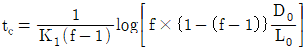
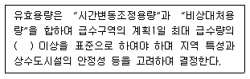
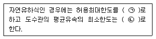
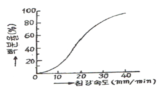
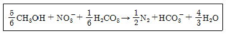
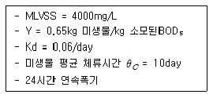
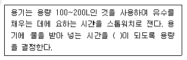
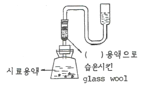
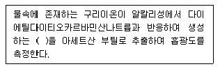
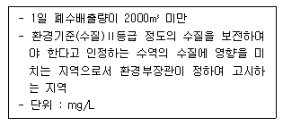

수질환경기사 (2016-05-08 기출문제)
1과목: 수질오염개론
1. 수질오염물질별 인체영향(질환)이 틀리게 짝지어진 것은?
- 비소 : 법랑반점
- 크롬 : 비중격 연골천공
- 아연 : 기관지 자극 및 폐염
- 납 : 근육과 관절의 장애
(정답률: 78%)

2. 하천의 DO가 8mg/L, BODu가 10mg/L일 때, 용존산소곡선(DOSag Curve)에서의 임계점에 도달하는 시간(day)은? (단, 온도는20℃, DO 포화농도는 9.2mg/L, K1=0.1/day, K2=0.2/day,

이다. 상용대수 기준)- 2.46
- 2.64
- 2.78
- 2.93
(정답률: 52%)
3. 저수지의 용량이 2.8×108m3이고 염분의 농도가 1.25%이며 유량은 2.4×109m3/년 이라면 저수지 염분농도가 200mg/L로 될 때까지의 소요시간(개월)은? (단, 염분 유입은 없으며 저수지는 완전혼합 반응조, 1차반응(자연대수)로 가정한다.)
- 4.6
- 5.8
- 6.9
- 7.4
(정답률: 56%)
4. 우리나라의 하천에 대한 설명으로 옳은 것은?
- 최소 유량에 대한 최대 유량의 비가 작다.
- 유출시간이 길다.
- 하천 유량이 안정되어 있다.
- 하상 계수가 크다.
(정답률: 78%)
5. 소수성(疏水性) 콜로이드 입자가 전기를 띠고 있는 것을 조사할때 적합한 것은?
- 콜로이드 입자에 강한 빛을 조사하여 Tyndall현상을 조사한다.
- 콜로이드 용액의 삼투압을 조사한다.
- 한외현미경으로 입자의 Brown 운동을 관찰한다.
- 전해질을 소량 넣고 응집을 조사한다.
(정답률: 66%)
6. 분뇨의 특성에 관한 설명으로 틀린 것은?
- 분과 뇨의 구성비는 대략 부피비로 1:10 정도이고, 고형물의 비는 7:1 정도이다.
- 음식문화의 차이로 인하여 우리나라와 일본의 분뇨 특성이 다르다.
- 1인 1일 분뇨생산량은 분이 약 0.14L, 뇨가 2L 정도로서 합계 2.14L이다.
- 분뇨 내의 BOD와 SS는 COD의 1/3~1/2 정도를 나타낸다.
(정답률: 64%)
7. 수은(Hg) 중독과 관련이 없는 것은?
- 난청, 언어장애, 구심성 시야협착, 정신장애를 일으킨다.
- 이따이이따이병을 유발한다.
- 유기수은은 무기수은 보다 독성이 강하며 신경계통에 장해를 준다.
- 무기수은은 황화물 침전법, 활성탄 흡착법, 이온교환법 등으로 처리할 수 있다.
(정답률: 81%)
8. 염소가스를 물에 녹여 pH가 7이고 염소이온의 농도가 71mg/L이면 자유염소와 차아염소산간의 비([HOCl]/[Cl2])는? (단, 차아염소산은 해리되지 않는 것으로 가정, 전리상수 값 4.5×10-4mol/L(25℃))
- 3.57×107
- 3.57×106
- 2.57×107
- 2.25×106
(정답률: 39%)
9. 지구상 담수의 존재량을 볼 때 그 양이 가장 큰 형태는?
- 빙하 및 빙산
- 하천수
- 지하수
- 수증기
(정답률: 82%)
10. 물의 물리적 특성으로 틀린 것은?
- 고체상태인 경우 수소결합에 의해 육각형 결정구조를 형성한다.
- 액체상태의 경우 공유결합과 수소결합의 구조로 H+, OH-로 전리되어 전하적으로 양성을 가진다.
- 동점성계수는 점성계수/밀도이며 포이즈(poise) 단위를 적용한다.
- 물은 물분자 사이의 수소결합으로 인하여 큰 표면장력을 갖는다.
(정답률: 76%)
11. 물의 순환과 이용에 관한 설명으로 틀린 것은?
- 지구전체의 강수량은 대략 4×1014m3/년으로서 그 중 약 1/4 가량이 육지에 떨어진다.
- 지구상의 물의 전체량의 약 97%가 해수이다.
- 담수중 50%가 곧 바로는 이용이 불가능하다.
- 담수중 하천수가 차지하는 비율은 약 0.32% 정도이다.
(정답률: 79%)
12. 분뇨 특성에 관한 내용 중 틀린 것은?
- 분과 뇨의 양적 혼합비는 10:1 이고, 고형물의 비로는 약 7:1 정도이다.
- 우리나라 사람은 1인당 BOD는 50g정도 발생한다.
- 분뇨의 발생가스중 주 부식성 가스는 H2S, NH3등이다.
- 분뇨의 비중은 약 1.02 이다.
(정답률: 72%)
13. 유기화합물이 무기화합물과 다른 점을 옳게 설명한 것은?
- 유기화합물들은 대체로 이온반응보다는 분자반응을 하므로 반응속도가 느리다.
- 유기화합물들은 대체로 분자반응보다는 이온반응을 하므로 반응속도가 느리다.
- 유기화합물들은 대체로 이온반응보다는 분자반응을 하므로 반응속도가 빠르다.
- 유기화합물들은 대체로 분자반응보다는 이온반응을 하므로 반응속도가 빠르다.
(정답률: 73%)
14. 수질관리 모델에 해당하지 않는 것은?
- WASP model
- RAM model
- WQRRS model
- HSPF model
(정답률: 74%)
15. 하수 등의 유입으로 인한 하천 변화 상태를 Whipple의 4지대로 나타낼 수 있다. 다음 중 ‘활발한 분해지대’에 관한 내용으로 틀린 것은?
- 용존산소가 없어 부패상태이며 물리적으로 이 지대는 회색 내지 흑색으로 나타난다.
- 혐기성세균과 곰팡이류가 호기성균과 교체되어 번식한다.
- 수중의 CO2 농도나 암모니아성 질소가 증가한다.
- 화장실 냄새나 H2S에 의한 달걀 썩는 냄새가 난다.
(정답률: 72%)
16. 그램음성 독립영양세균에 속하지 않는 것은?
- Nitrosomonas속
- Beggiatoa속
- Micrococcus속
- Thiobacillus속
(정답률: 49%)
17. 지하수의 특성에 대한 설명으로 틀린 것은?
- 지하수는 국지적인 환경조건의 영향을 크게 받는다.
- 지하수의 염분농도는 지표수 평균농도 보다 낮다.
- 주로 세균에 의한 유기물 분해작용이 일어난다.
- 지하수는 토양수내 유기물질 분해에 따른 탄산가스의 발생과 약산성의 빗물로 인하여 광물질이 용해되어 경도가 높다.
(정답률: 78%)
18. 박테리아를 환경적인 조건에 따라 분류할 때, 바닷물과 비숫한염 조건하에서 잘 자라는 박테리아(호염균)는?
- Hyperthermophiles
- Microaerophiles
- Halophiles
- Chemotrophs
(정답률: 71%)
19. 생물농축에 대한 설명으로 틀린 것은?
- 수생생물의 체내의 각종 중금속 농도는 환경수중의 농도보다는 높은 경우가 많다.
- 생물체중의 농도와 환경수중의 농도비를 농축비 또는 농축계수라고 말한다.
- 수생생물의 종류에 따라서 중금속의 농축비가 다르게 되어 있는 것이 많다.
- 농축비는 먹이사슬 과정에서 높은 단계의 소비자에 상당하는 생물 일수록 낮게 된다.
(정답률: 80%)
20. 콜로이드(Colloid)용액이 갖는 일반적인 특성으로 틀린 것은?
- 광선을 통과시키면 입자가 빛을 산란하여 빛의 진로를 볼 수 없게 된다.
- 콜로이드 입자가 분산매 및 다른 입자와 충돌하여 불규칙한 운동을 하게 된다.
- 콜로이드 입자는 질량에 비해서 표면적이 크므로 용액 속에 있는 다른 입자를 흡착하는 힘이 크다.
- 콜로이드 용액에서는 콜로이드 입자가 양이온 또는 음이온을 띠고 있다.
(정답률: 66%)
2과목: 상하수도계획
21. 펌프 운전 시 발생할 수 있는 비정상현상에 대한 설명이다. 펌프운전 중에 토출량과 토출압이 주기적으로 숨이 찬 것처럼 변동하는 상태를 일으키는 현상으로 펌프 특성 곡선이 산형에서 발생하며 큰 진동을 발생하는 경우는?
- 캐비테이션(Cavitation)
- 서어징(Surging)
- 수격작용(Water hammer)
- 크로스컨넥숀(Cross connection)
(정답률: 68%)
22. 하수 슬러지 소각을 위한 유동층소각로의 장단점으로 틀린 것은?
- 연소효율이 높고 소각되지 않는 양이 적기 때문에 로 잔사매립에 의한 2차 공해가 없다.
- 유동매체로 규소 등을 사용할 때에 손실이 발생하므로 손실보충을 연속적으로 하여야 한다.
- 로 내 온도의 자동제어 및 열회수가 용이하다.
- 로 내의 기계적 가동부분이 많아 유지관리가 어렵다.
(정답률: 60%)
23. 배수시설인 배수관의 최소동수압 및 최대정수압 기준으로 옳은 것은? (단, 급수관을 분기하는 지점에서 배수관내 수압기준)
- 100kPa 이상을 확보 함, 500kPa를 초과하지 않아야 함
- 100kPa 이상을 확보 함, 600kPa를 초과하지 않아야 함
- 150kPa 이상을 확보 함, 700kPa를 초과하지 않아야 함
- 150kPa 이상을 확보 함, 800kPa를 초과하지 않아야 함
(정답률: 79%)
24. 펌프의 토출량이 1200m3/hr, 흡입구의 유속이 2.0m/sec일 경우 펌프의 흡입구경(mm)은?
- 약 262
- 약 362
- 약 462
- 약 562
(정답률: 62%)
25. 유역면적이 1.2km2, 유출계수가 0.2인 산림지역에 강우 강도가 2.5mm/min일 때 우수유출량(m3/sec)은? (단, 합리식 적용)
- 4
- 6
- 8
- 10
(정답률: 58%)
26. 상수도 관종 중 강관의 단점이 아닌 것은?
- 가공성이 나쁘다(약하다).
- 전식에 대하여 고려해야 한다.
- 내외의 방식면이 손상되면 부식되기 쉽다.
- 용접이음은 숙련공이나 특수한 공구를 필요로 한다.
(정답률: 61%)
27. 상수시설인 배수지의 용량에 관한 내용으로 ( )에 옳은 것은?

- 6시간분
- 8시간분
- 10시간분
- 12시간분
(정답률: 79%)
28. 하수시설인 중력식침사지에 대한 설명 중 옳은 것은?
- 체류시간은 3~6분을 표준으로 한다.
- 수심은 유효수심에 모래퇴적부의 깊이를 더한 것으로 한다.
- 오수침사지의 표면부하율은 3600 m3/m2·day 정도로 한다.
- 우수침사지의 표면부하율은 1800 m3/m2·day 정도로 한다.
(정답률: 59%)
29. 상수시설인 도수관을 설계할 때의 평균유속에 관한 내용으로 ( )에 맞는 내용은?

- ㉠ 1m/s, ㉡ 0.3m/s
- ㉠ 2m/s, ㉡ 0.5m/s
- ㉠ 3m/s, ㉡ 0.3m/s
- ㉠ 5m/s, ㉡ 0.5m/s
(정답률: 79%)
30. 상수처리를 위한 정수시설 중 착수정에 관한 내용으로 틀린 것은?
- 수위가 고수위 이상으로 올라가지 않도록 월류관이나 월류위어를 설치한다.
- 착수정의 고수위와 주변벽체의 상단 간에는 60cm 이상의 여유를 두어야 한다.
- 착수정의 용량은 체류시간을 30분 이상으로 한다.
- 필요에 따라 분말활성탄을 주입할 수 있는 장치를 설치하는 것이 바람직하다.
(정답률: 68%)
31. 펌프의 캐비테이션이 발생하는 것을 방지하기 위한 대책으로 볼수 없는 것은?
- 펌프의 설치위치를 가능한 한 높게 하여 펌프의 필요유효흡입수두를 작게 한다.
- 펌프의 회전수를 낮게 선정하여 펌프의 필요유효흡입수두를 작게 한다.
- 흡입관의 손실을 가능한 한 작게 하여 펌프의 가용유효흡입수두를 크게 한다.
- 흡입측 밸브를 완전히 개방하고 펌프를 운전한다.
(정답률: 60%)
32. 상수의 급속여과지 설계기준에 대한 설명 중 틀린 것은?
- 단층의 여과속도는 200~350m/일을 표준으로 한다.
- 모래층의 두께는 여과사의 유효경이 0.45~0.7mm의 범위인 경우에는 60~70cm를 표준으로 한다.
- 여과면적은 계획정수량을 여과속도로 나누어 구한다.
- 1지의 여과면적은 150m2 이하로 한다.
(정답률: 66%)
33. 관거 직선부에서 하수도 맨홀의 최대 간격 표준은? (단, 600mm 이하의 관 기준)
- 50m
- 75m
- 100m
- 150m
(정답률: 54%)
34. 토출량 20m3/min, 전양정 6m, 회전속도 1200rpm인 펌프의 비교회전도는?
- 약 1300
- 약 1400
- 약 1500
- 약 1600
(정답률: 68%)
35. 상수시설인 침사지의 구조에 관한 설명으로 틀린 것은?
- 표면 부하율은 500~800mm/min을 표준으로 한다.
- 지내평균유속은 2~7cm/sec를 표준으로 한다.
- 지의 길이는 폭의 3~8배를 표준으로 한다.
- 지의 상단높이는 고수위보다 0.6~1m의 여유고를 둔다.
(정답률: 68%)
36. 계획오수량에 관한 설명으로 가장 거리가 먼 것은?
- 합류식에서 우천시 계획오수량은 원칙적으로 계획1일최대오수량의 3배 이상으로 한다.
- 계획1일최대오수량은 1인1일최대오수량에 계획인구를 곱한 후, 여기에 공장 폐수량, 지하수량 및 기타 배수량을 더한 것으로 한다.
- 지하수량은 1인1일최대오수량의 10~20%로 한다.
- 계획1일평균오수량은 계획1일 최대오수량의 70~80%를 표준으로 한다.
(정답률: 47%)
37. 하수관거 중 우수관거 및 합류관거의 유속기준으로 옳은 것은?
- 계획우수량에 대하여 유속을 최소 0.6m/s, 최대 3.0m/s로 한다.
- 계획우수량에 대하여 유속을 최소 0.8m/s, 최대 3.0m/s로 한다.
- 계획우수량에 대하여 유속을 최소 1.0m/s, 최대 3.0m/s로 한다.
- 계획우수량에 대하여 유속을 최소 1.2m/s, 최대 3.0m/s로 한다.
(정답률: 60%)
38. 용지이용율을 높이고자 고안된 심층포기조에 관한 설명으로 가장 거리가 먼 것은?
- 조의 용적은 계획1일 최대오수량에 따라서 설정한다.
- 조의 수는 2조 이상으로 한다.
- 형상은 정사각형으로 하고 폭은 수심에 대해 3배 정도로 한다.
- 수심은 10m 정도로 한다.
(정답률: 57%)
39. 직경 0.3m로 판 자유수면 정호에서 양수 전의 지하수위는 불투수층 위로 30m였다. 100m3/hr로 양수할 때 양수정으로부터 10m와 20m 떨어진 관측정의 수위는 3m와 1m 각각 저하하였다. 이때 대수층의 투수계수는?
- 약 0.20m/s
- 약 0.20m/hr
- 약 0.25m/s
- 약 0.25m/hr
(정답률: 32%)
40. 내경 1.0m인 강관에 내얍 10MPa로 물이 흐른다. 내압에 의한 원주방향의 응력도가 1500N/mm2일 때 강관두께(mm)는?
- 약 3.3
- 약 5.2
- 약 7.4
- 약 9.5
(정답률: 45%)
3과목: 수질오염방지기술
41. 염소 소독에 의한 세균의 사멸은 1차 반응 속도식에 따른다. 잔류염소 농도 0.4mg/L에서 2분 간에 85%의 세균이 살균되었다면 99.9% 살균을 위해 필요한 시간(분)은? (단, base는 자연대수임)
- 약 5.9
- 약 7.3
- 약 10.2
- 약 16.7
(정답률: 60%)
42. 유량이 6750m3/d, 부유물질농도(SS)가 55mg/L인 폐수에 황산제이철(Fe2(SO4)3) 100mg/L을 응집제로 주입한다. 이 물에 알칼리도가 없는 경우 매일 첨가해야 하는 석회의 양(kg/d)은? (단, 원자량 Fe = 55.8, Ca = 40)
- 315
- 346
- 375
- 386
(정답률: 37%)
43. 염소살균에 관한 설명으로 틀린 것은?
- HOCl의 살균력은 OCl-의 약 80배 정도 강한 것으로 알려져 있다.
- 수중 용존 염소는 페놀과 반응하여 클로로페놀을 형성하여 불쾌한 맛과 냄새를 유발한다.
- pH 9 이상에서는 물에 주입된 염소는 대부분이 HOCl로 존재한다.
- 유리잔류염소는 수중의 암모니아나 유기성 질소화합물이 존재할 경우 이들과 반응하여 결합잔류염소를 형성한다.
(정답률: 59%)
44. SS 3600mg/L를 함유하고 있는 폐수 내 입자의 침강속도 분포가 그림과 같을 때 폐수 28800m3/day를 보통 침전처리하여 SS90% 이상을 제거하고자 한다. 필요한 침전지의 최소 소요면적(m2)은?

- 약 100
- 약 200
- 약 1000
- 약 2000
(정답률: 44%)
45. 활성슬러지법 운전 중 슬러지부상 문제를 해결할 수 있는 방법이 아닌 것은?
- 폭기조에서 이차침전지로의 유량을 감소시킨다.
- 이차침전지 슬러지 수집장치의 속도를 높인다.
- 슬러지 폐기량을 감소시킨다.
- 이차침전지에서 슬러지체류시간을 감소시킨다.
(정답률: 51%)
46. 생물학적으로 질소를 제거하기 위해 질산화-탈질공정을 운영함에 있어 호기성 상태에서 산화된 NO3- 60mg/L를 탈질시키는데 소모되는 이론적인 메탄올 농도(mg/L)는?

- 약 14
- 약 18
- 약 22
- 약 26
(정답률: 51%)
47. 유량 10000m3/d인 폐수를 처리하기 위한 정방형 skimming 탱 크의 표면적 부하율(m3/m2·d)은? (단, 체류시간은 10분이고, 상승 속도는 200mm/min임)
- 213
- 233
- 258
- 288
(정답률: 44%)
48. 완전혼합 활성슬러지 공법의 장점이 아닌 것은?
- 산소소모율(oxygen uptake rate)에 있어서 최대 균등화
- 유입물질이 반응조 전체에 분산됨으로 인한 충격부하영향의 최소화
- 호기성생물학적 산화가 일어나는 동안 발생되는 CO2의 적절한 중화
- 독성물질 유입시 플록(floc) 형성의 안정성
(정답률: 60%)
49. 회전 원판 접촉법(RBC)의 장점이 아닌 것은?
- 충격부하의 조절이 가능하다.
- 다단계 공정에서 높은 질산화율을 얻을 수 있다.
- 활성슬러지 공법에 비하여 소요동력이 적다.
- 반송에 따른 처리효율의 효과적 증대가 가능하다.
(정답률: 44%)
50. 5단계 Bardenpho 공법에 관한 설명으로 틀린 것은?
- 슬러지 생산량은 비교적 많으나 반응조의 규모가 작다.
- 호기조에서 1차 무산소조로 내부반송을 한다.
- 효과적인 인 제거를 위해서는 혐기조에 질산성 질소가 유입되지 않아야 한다.
- 인 제거는 과잉의 인을 섭취한 슬러지를 폐기함으로서 이루어진다.
(정답률: 46%)
51. 함수율 98%, 유기물함량이 62%인 슬러지 100m3/day를 25일 소화하여 유기물의 2/3를 가스화 및 액화하여 함수율 95%의 소화 슬러지로 추출하는 경우 소화조 용량(m3)은? (단, 슬러지 비중은 1.0, 기타 조건은 고려하지 않음)
- 1244
- 1344
- 1444
- 1544
(정답률: 32%)
52. 단면이 직사각형인 하천의 깊이가 0.2m이고 깊이에 비하여 폭이 매우 넓을 때 동수반경(m)은?
- 0.2
- 0.5
- 0.8
- 1.0
(정답률: 55%)
53. 용해성 BOD5가 250mg/L인 폐수가 완전혼합활성슬러지 공정으로 처리된다. 유출수의 용해성 BOD5는 7.4mg/L이다. 유량이 18925m3/day일 때 포기조 용적(m3)은?

- 3330
- 4663
- 5330
- 6270
(정답률: 44%)
54. 하·폐수처리시 슬러지 팽화(Bulking)현상을 조절하는 방법이 아닌 것은?
- 염소나 과산화수소를 반송슬러지에 주입한다.
- 선택반응조(selector)를 이용한다.
- fungi를 성장시켜 F/M비를 감소시킨다.
- 포기조 내의 용존산소의 농도를 변화시킨다.
(정답률: 66%)
55. 침전하는 입자들이 너무 가까이 있어서 입자간의 힘이 이웃입자의 침전을 방해하게 되고 동일한 속도로 침전하며 최종침전지 중간정도의 깊이에서 일어나는 침전형태는?
- 지역침전
- 응집침전
- 독립침전
- 압축침전
(정답률: 66%)
56. 수질성분이 금속하수도관의 부식에 미치는 영향으로 틀린 것은?
- 고농도의 칼슘은 침전물이 쌓이는 곳에 부식을 가속화한다.
- 마그네슘은 알칼리도와 pH 완충효과를 향상시킬 수 있다.
- 구리는 갈바닉 전지를 이룬 배관상에 구멍을 야기한다.
- 암모니아는 착화물의 형성을 통해 구리, 납 등의 금속 용해도를 증가시킬 수 있다.
(정답률: 43%)
57. 폐수 유량의 첨두인자(peaking factor)란?
- 첨두유량과 최소유량의 비
- 첨두유량과 평균유량의 비
- 첨두유량과 최대유량의 비
- 첨두유량과 첨두유량의 1/3과의 비
(정답률: 62%)
58. 슬러지 개량법의 특징으로 가장 거리가 먼 것은?
- 고분자 응집제 첨가 : 슬러지 응결을 촉진한다.
- 무기약품 첨가 : 무기약품은 슬러지의 pH를 변화시켜 무기질 비율을 증가시키고 안정화를 도모한다.
- 세정 : 혐기성 소화슬러지의 알칼리도를 감소시켜 산성금속염의 주입량을 감소시킨다.
- 열처리 : 슬러지의 함수율을 감소시키고 응결핵을 생성시켜 탈수를 개선한다.
(정답률: 44%)
59. 산성조건하에서 NaHSO3 혹은 FeSO4 등을 사용하여 환원과정을 거친 후 중화시켜 침전물을 제거함으로써 처리할 수 있는 폐수는?
- 철, 망간 함유폐수
- 시안 함유폐수
- 카드뮴 함유폐수
- 6가크롬 함유폐수
(정답률: 44%)
60. 기계식 봉 스크린을 0.64m/s로 흐르는 수로에 설치하고자 한다. 봉의 두께는 10mm 이고, 간격이 30mm라면 봉 사이로 지나는 유속(m/s)은?
- 0.75
- 0.80
- 0.85
- 0.90
(정답률: 51%)
4과목: 수질오염공정시험기준
61. 예상 BOD치에 대한 사전경험이 없을 때 오염된 하천수의 검액조제 방법은?
- 25~100%의 시료가 함유되도록 희석 조제한다.
- 15~25%의 시료가 함유되도록 희석 조제한다.
- 5~15%의 시료가 함유되도록 희석 조제한다.
- 1~5%의 시료가 함유되도록 희석 조제한다.
(정답률: 62%)
62. 95% 황산(비중 1.84)이 있다면 이 황산의 N농도는?
- 15.6N
- 19.4N
- 27.8N
- 35.7N
(정답률: 50%)
63. 기체크로마토그래프 검출기에 관한 설명으로 틀린 것은?
- 열전도도 검출기는 금속 필라멘트 또는 전기저항체를 검출소자로한다.
- 수소염 이온화 검출기의 본체는 수소연소노즐, 이온수집기, 대극용기는 용량 100~200L인 것을 사용하여 유수를 채우는 데에 요하는 시간을 스톱워치로 잰다.
- 알칼리 열이온화 검출기는 함유할로겐 화합물 및 함유황화물을 고감도로 검출할 수 있다.
- 전자 포획형 검출기는 많은 니트로 화합물, 유기금속화합물 등을 선택적으로 검출할 수 있다.
(정답률: 36%)
64. 수질분석을 위한 시료 채취 시 유의사항과 가장 거리가 먼 것은?
- 채취용기는 시료를 채우기 전에 맑은 물로 3회 이상 씻은 다음 사용한다.
- 용존가스, 환원성 물질, 휘발성 유기물질 등의 측정을 위한 시료는 운반중 공기와의 접촉이 없도록 가득 채워져야 한다.
- 지하수 시료는 취수정 내에 고여있는 물을 충분히 퍼낸(고여 있는 물의 4~5배 정도이나 pH 및 전기전도도를 연속적으로 측정하여 이 값이 평형을 이룰 때까지로 한다.) 다음 새로 나온 물을 채취한다.
- 시료채취량은 시험항목 및 시험횟수에 따라 차이가 있으나 보통 3~5L 정도이어야 한다.
(정답률: 72%)
65. 시료를 온도 4℃, H2SO4로 pH를 2 이하로 보존하여야 하는 측정대상 항목이 아닌 것은?
- 총질소
- 총인
- 화학적산소요구량
- 유기인
(정답률: 55%)
66. 투명도 측정에 관한 내용으로 틀린 것은?
- 투명도판(백색원판)의 지름은 30cm 이다.
- 투명도판에 뚫린 구멍의 지름은 5cm 이다.
- 투명도판에는 구멍이 8개 뚫려 있다.
- 투명도판의 무게는 약 2kg 이다.
(정답률: 62%)
67. 항량으로 될 때까지 건조한다는 용어의 의미는?
- 같은 조건에서 1시간 더 건조하였을 때 전후 무게의 차가 거의 없을 때
- 같은 조건에서 1시간 더 건조하였을 때 전후 무게의 차가 g당 0.1mg 이하일 때
- 같은 조건에서 1시간 더 건조하였을 때 전후 무게의 차가 g당 0.3mg 이하일 때
- 같은 조건에서 1시간 더 건조하였을 때 전후 무게의 차가 g당 0.5mg 이하일 때
(정답률: 68%)
68. 알킬수은 화합물을 기체크로마토그래피에 따라 정량하는 방법에 관한 설명으로 가장 거리가 먼 것은?
- 전자포획형 검출기(ECD)를 사용한다.
- 알킬수은화합물을 벤젠으로 추출한다.
- 운반기체는 순도 99.999% 이상의 질소 또는 헬륨을 사용한다.
- 정량한계는 0.⑤mg/L 이다.
(정답률: 53%)
69. 수질오염공정시험기준 상 양극벗김전압전류법을 적용하여 측정하는 금속류는?
- 아연
- 주석
- 카드뮴
- 크롬
(정답률: 59%)
70. 유도결합플라스마-원자발광광도계의 측정 시 유도코일 상단으로 부터 플라스마 발광부 관측높이(mm)는? (단, 알카리 원소 경우 제외)
- 15~18
- 20~25
- 30~34
- 40~43
(정답률: 47%)
71. 폐수의 유량 측정법에 있어 1m3/min 이하로 폐수유량이 배출될 경우 용기에 의한 측정방법에 관한 내용이다. ( )에 옳은 내용은?

- 10초 이상
- 20초 이상
- 30초 이상
- 40초 이상
(정답률: 58%)
72. 다음 그림은 비소시험장치(비화수소발생장치)이다. ( )에 알맞은 물질은? (단, 흡광광도법 기준)

- AsH3
- SnCl2
- Pb(CH3COO)2
- AgSCNS(C2H5)2
(정답률: 55%)
73. 암모니아성 질소의 측정방법이 아닌 것은?
- 자외선/가시선 분광법
- 이온전극법
- 이온크로마토그래피
- 적정법
(정답률: 44%)
74. 유도결합플라스마-원자발광분광법에서 일반적으로 냉각가스의 유량(L/min)은?
- 0.1~2
- 0.5~2
- 5~10
- 10~19
(정답률: 33%)
75. 구리를 자외선/가시선 분광법으로 정량하는 방법으로 ( )에 옳은 내용은?

- 적색의 킬레이트 화합물
- 청색의 킬레이트 화합물
- 적갈색의 킬레이트 화합물
- 황갈색의 킬레이트 화합물
(정답률: 45%)
76. 4각 웨어에 의하여 유량을 측정하려고 한다. 웨어의 수두 0.5m, 절단의 폭이 4m이면 유량(m3/분)은? (단, 유량 계수는 4.8 이다.)
- 약 4.3
- 약 6.8
- 약 8.1
- 약 10.4
(정답률: 53%)
77. 식물성 플랑크톤 측정에 관한 설명으로 틀린 것은?
- 시료가 육안으로 녹색이나 갈색으로 보일 경우 정제수로 적절한 농도로 희석한다.
- 물속에 식물성 플랑크톤은 평판집락법을 이용하여 면적당 분포하는 개체수를 조사한다.
- 식물성 플랑크톤은 운동력이 없거나 극히 적어 수체의 유동에 따라 수체 내에 부유하면서 생활하는 단일개체, 집락성, 선상형태의 광합성 생물을 총칭한다.
- 시료의 개체수는 계수면적당 10~40 정도가 되도록 희석 또는 농축한다.
(정답률: 56%)
78. 이온전극법에 대한 설명으로 틀린 것은?
- 시료용액의 교반은 이온전극의 응답속도 이외의 전극범위, 정량한계값에는 영향을 미치지 않는다.
- 전극과 비교전극을 사용하여 전위를 측정하고 그 전위차로부터 정량하는 방법이다.
- 이온전극법에 사용하는 장치의 기본구성은 비교전극, 이온전극, 자석교반기, 저항 전위계, 이온측정기 등으로 되어 있다.
- 이온전극의 종류에는 유리막 전극, 고체막 전극, 격막형 전극으로 구분된다.
(정답률: 54%)
79. 순수한 정제수 500mL에 HCl(비중 1.18) 100mL를 혼합했을 경우 이 용액의 염산농도(중량 %)는?
- 19.1
- 20.0
- 23.4
- 31.7
(정답률: 32%)
80. 산성 과망간산 칼륨법에 의해 COD를 측정할 때 0.⑤0N 과망간산칼륨 용액 1mL은 산소 몇 mg에 상당하는가?
- 0.2mg
- 0.4mg
- 0.8mg
- 0.16mg
(정답률: 34%)
5과목: 수질환경관계법규
81. 수질 및 수생태계 보전에 관한 법률에 적용되는 용어의 정의로 틀린 것은?
- 폐수무방류배출시설 : 폐수배출시설에서 발생하는 폐수를 당해 사업장 안에서 수질오염방지기설을 이용하여 처리하거나 동일 배출시설에 재이용하는 등 공공수역으로 배출하지 아니하는 폐수배출 시설을 말한다.
- 수면관리자 : 호소를 관리하는 자를 말하며, 이 경우 동일한 호소를 관리하는 자가 3인 이상인 경우에는 하천법에 의한 하천의 관리청의 자가 수면관리자가 된다.
- 특정수질유해물질 : 사람의 건강, 재산이나 동·식물의 생육에 직접 또는 간접으로 위해를 줄 우려가 있는 수질오염물질로서 환경부령이 정하는 것을 말한다.
- 공공수역 : 하천·호소·항만·연안해역 그밖에 공공용에 사용되는 수역과 이에 접속하여 공공용에 사용되는 환경부령이 정하는 수로를 말한다.
(정답률: 55%)
82. 상수원의 수질보전을 위하여 상수원을 오염시킬 우려가 있는 물질을 수송하는 자동차의 통행을 제한하려고 한다. 해당되는 지역이 아닌 것은?
- 상수원보호구역
- 규정에 의하여 지정·고시된 수변구역
- 상수원에 중대한 오염을 일으킬 수 있어 대통령령이 정하는 지역
- 특별대책지역
(정답률: 31%)
83. 다음 조건에서 적용되는 오염물질의 배출허용기준은?

- BOD 80 이하, SS 80 이하
- BOD 70 이하, SS 70 이하
- BOD 60 이하, SS 60 이하
- BOD 50 이하, SS 50 이하
(정답률: 40%)
84. 특별대책지역의 수질오염을 방지하기 위하여 해당 지역에 새로 설치되는 배출시설에 대해 적용할 수 있는 배출허용기준은?
- 별도배출허용기준
- 시·도배출허용기준
- 특별배출허용기준
- 엄격한 배출허용기준
(정답률: 56%)
85. 폐수종말처리시설의 방류수 수질기준 중 생태독성(TU)기준으로 옳은 것은? (단, 2013.1.1. 이후 수질기준, 보기항의 ( )내 기준은 농공단지 폐수종말처리시설 방류수 수질기준)
- 1(1) 이하
- 1(2) 이하
- 2(2) 이하
- 2(3) 이하
(정답률: 45%)
86. 수질오염방지시설 중 생물화학적 처리시설에 해당되는 것은?
- 살균시설
- 폭기시설
- 환원시설
- 침전물 개량시설
(정답률: 50%)
87. 오염총량관리기본방침에 포함되어야 하는 사항이 아닌 것은?
- 오염총량관리의 목표
- 오염총량관리 대상 지역 및 시설
- 오염총량관리의 대상 수질오염물질 종류
- 오염원의 조사 및 오염부하량 산정 방법
(정답률: 43%)
88. 낚시금지구역 또는 낚시제한구역을 지정하고자 하는 경우 고려하여야 할 사항으로 틀린 것은?
- 오염원 현황
- 지역별 낚시인구 현황
- 수질오염도
- 용수의 목적
(정답률: 60%)
89. 환경기술인 등의 교육기간 · 대상자 등에 관한 내용으로 틀린 것은?
- 최초교육 : 환경기술인 등이 최초로 업무에 종사한 날부터 1년 이내에 실시하는 교육
- 보수교육 : 최초 교육 후 3년 마다 실시하는 교육
- 환경기술인 교육기관 : 환경관리협회
- 기술요원 교육기관 : 국립환경인력개발원
(정답률: 62%)
90. 사람의 건강보호를 위한 수질 및 수생태계 하천의 환경기준으로 잘못된 것은?
- 유기인 : 검출되어서는 안됨
- 6가크롬 : 0.⑤mg/L 이하
- 카드뮴(Cd) : 0.⑤mg/L 이하
- 음이온계면활성제(ABS) : 0.5mg/L 이하
(정답률: 40%)
91. 오염물질의 희석처리가 가능한 경우에 해당하지 않는 것은?
- 폐수의 염분 농도가 높아 원래의 상태로는 생물화학적 처리가 어려운 경우
- 폐수의 유기물의 농도가 높아 원래의 상태로는 생물화학적 처리가 어려운 경우
- 폐수의 독성이 강해 원래의 상태로는 생물화학적 처리가 어려운 경우
- 폭발의 위험 등이 있어 원래의 상태로는 화학적 처리가 어려운 경우에 희석처리 가능
(정답률: 44%)
92. 환경기술인 또는 기술요원이 관련 분야에 따라 이수하여야 할 교육과정의 교육기간 기준은? (단, 정보통신매체를 이용한 원격교육제외)(관련 규정 개정전 문제로 기존 정답은 4번이었으면 여기서는 4번을 누르면 정답 처리됩니다. 자세한 내용은 해설을 참고하세요)
- 16시간 이내
- 24시간 이내
- 3일 이내
- 5일 이내
(정답률: 59%)
93. 방지시설설치의 면제기준에 관한 설명으로 틀린 것은?
- 수질오염물질이 항상 배출허용기준 이하로 배출되는 경우
- 새로운 수질오염물질이 발생되어 배출시설 또는 방지시설의 개선이 필요한 경우
- 폐수를 전량 위탁처리하는 경우
- 폐수를 전량 재이용하는 등 방지시설을 설치하지 아니하고도 수질 오염물질을 적정하게 처리할 수 있는 경우
(정답률: 53%)
94. 수질오염경보 중 수질오염감시경보 단계가 ‘관심’인 경우 한국환경공단이사장의 조치사항으로 옳은 것은?
- 수체변화 감시 및 원인 조사
- 지속적 모니터링을 통한 감시
- 관심경보 발령 및 관계기관 통보
- 원인조사 및 오염물질 추적 조사 지원
(정답률: 44%)
95. 사업장에서 1일 폐수 배출량이 150m3 발생하고 있을 때 사업장의 규모별 구분으로 맞는 것은?
- 2종 사업장
- 3종 사업장
- 4종 사업장
- 5종 사업장
(정답률: 47%)
96. 위탁처리대상 폐수를 환경부령으로 정하고 있다. 폐수배출시설의 설치를 제한할 수 있는 지역에서 위탁 처리할 수 있는 1일 폐수의 양은?
- 1m3 미만
- 5m3 미만
- 20m3 미만
- 50m3 미만
(정답률: 37%)
97. 정당한 사유 없이 공공수역에 다량의 토사를 유출하거나 버려 상수원 또는 하천, 호소를 현저히 오염되게 하는 행위를 한 자에게 부과되는 벌칙은?(오류 신고가 접수된 문제입니다. 반드시 정답과 해설을 확인하시기 바랍니다.)
- 100만원 이하의 벌금을 부과
- 300만원 이하의 벌금을 부과
- 500만원 이하의 벌금을 부과
- 1년 이하의 징역 또는 1천만원 이하의 벌금을 부과
(정답률: 55%)
98. 폐수무방류배출시설의 운영일지의 보존기간은?
- 최종 기록일부터 6월
- 최종 기록일부터 1년
- 최종 기록일부터 3년
- 최종 기록일부터 5년
(정답률: 56%)
99. 비점오염원관리지역의 지정기준으로 옳은 것은?
- 인구 5만명 이상인 도시로서 비점오염원관리가 필요한 지역
- 인구 10만명 이상인 도시로서 비점오염원관리가 필요한 지역
- 인구 50만명 이상인 도시로서 비점오염원관리가 필요한 지역
- 인구 100만명 이상인 도시로서 비점오염원관리가 필요한 지역
(정답률: 57%)
100. 특정수질 유해물질로 분류되어 있지 않은 것은?
- 1,4-다이옥산
- 아세트알데히드
- 아크릴아미드
- 브로모포름
(정답률: 38%)